The problem
JCB Gas Station is in Sto. Niño, South Cotabato. In the province, brownouts and weak internet are part of the week, and cloud apps stop working when either one hits.
Brownouts
When the power goes out, the router goes with it. Cloud tools that need a connection can't record or check anything.
Weak internet
Even with power, the signal drops. A station app that needs the cloud stops at the moment the shift needs to be closed.
Gaps go unchecked
Fuel that left the pump without a recorded sale, and cash that doesn't match, slip through when nobody can run the check.
How it works
Photo → numbers → fuel & cash check → ask. The models read and explain. Plain code does every peso and liter of math.
- Litrato
📷 Photo
Snap the pump's totalizer screen, a meter, a receipt or the shift closing slip.
- Numbers
🔢 Numbers
Apple Vision OCR reads the digits on the Mac in about 2 seconds. Code matches each number to its label. Staff can fix anything before saving.
- Fuel & cash check
✅ Check
Code compares pump totals (closing − opening) with recorded sales, and expected cash with counted cash. Gaps over the tolerance turn red.
- Magtanong
💬 Ask
Staff ask in Tagalog or English, like “May kulang ba sa diesel?” Gemma 3 4B answers from the computed numbers only.
Premium 3: the pump says 416.07 L dispensed, recorded sales are 413.5 L (0.62%, over the 0.5% tolerance). The pump readings come from real photos; the sales are sample data.
Real pump photos · sample salesThe shift closing slip is read and checked against the shift: expected cash ₱39,219.55, declared ₱39,169.55. Kulang ang pera sa kaha ng ₱50.00.
Demo closing slipDemo video
A short walkthrough of PumpLocal running on the MacBook Air with Wi-Fi off.
Screenshots
The app's screens, captured from the latest build. Tap any image to see it full size.

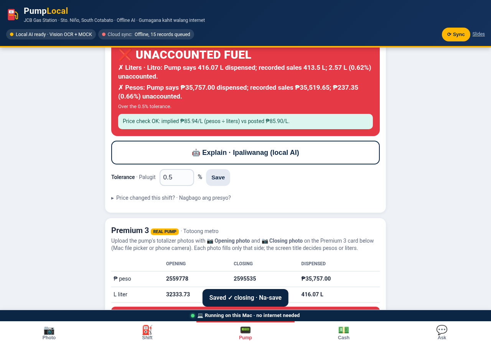

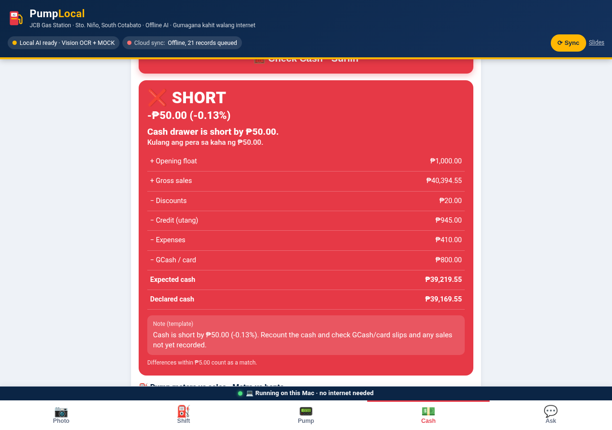

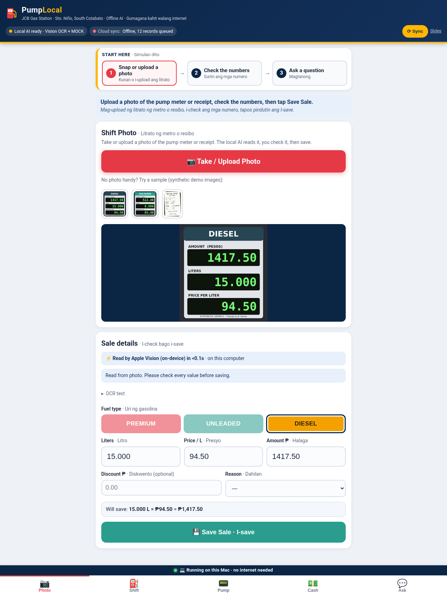

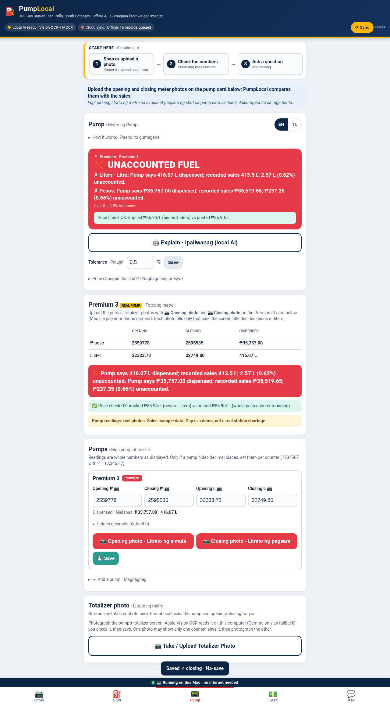

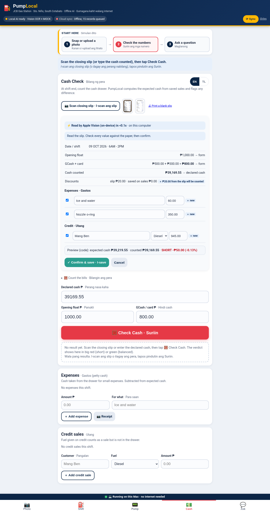

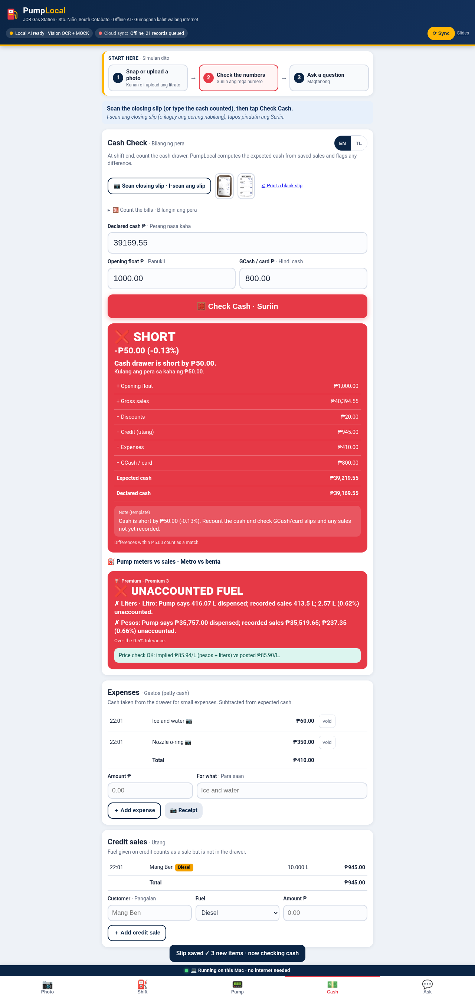

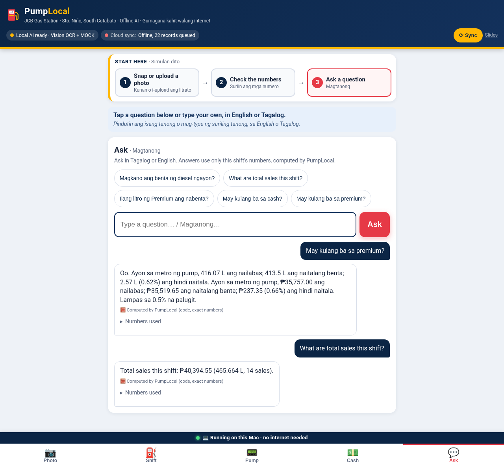

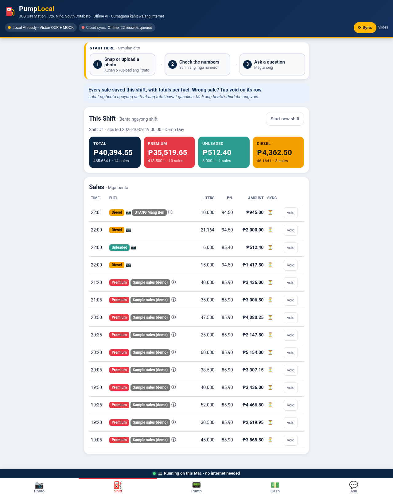
More screens: each tab on desktop

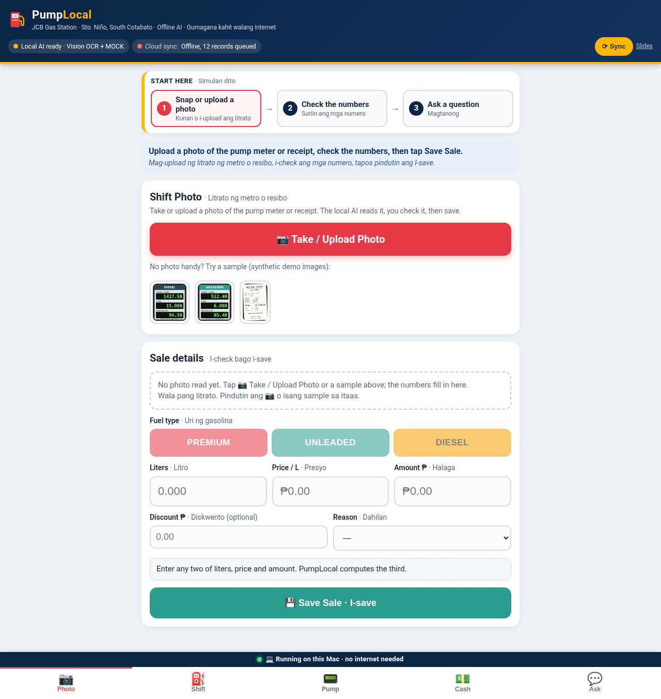

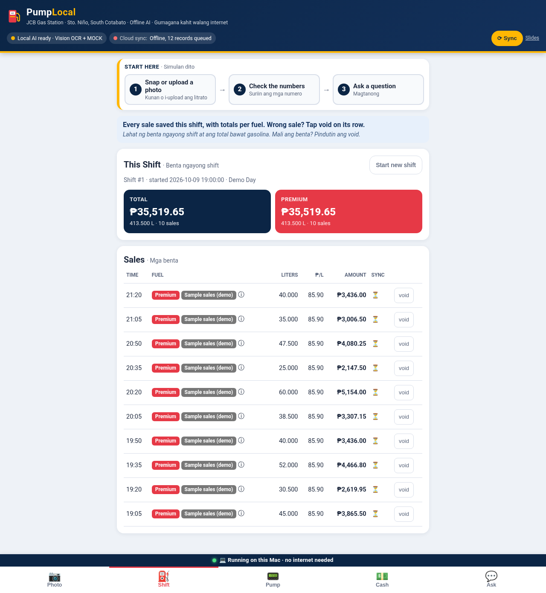

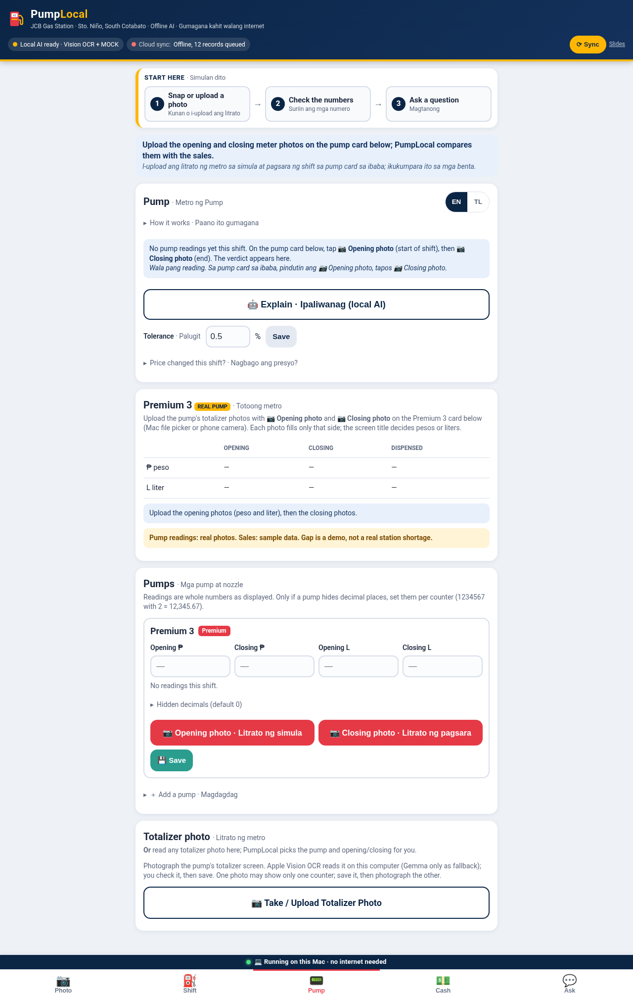

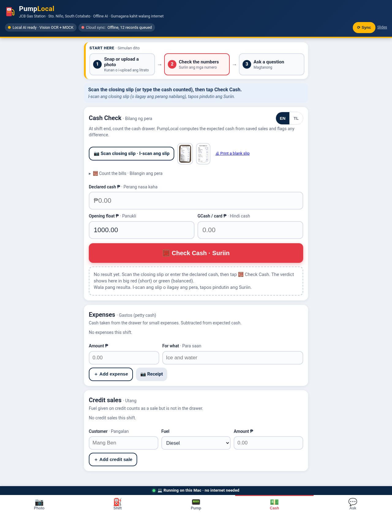

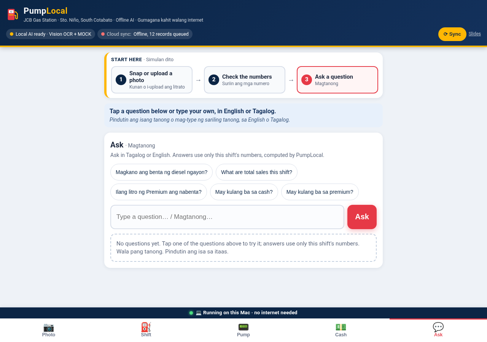
Slides
The five-slide pitch deck. Open the full slides (use ← → or click to move, F for fullscreen).
Station setup
Small, cheap and able to ride out a brownout. Nothing in the shift check depends on the internet.
🖥️ Mac mini + Wi-Fi router on one small UPS
The Mac mini runs PumpLocal and the local models. Staff phones can reach it over the station's own Wi-Fi, so the network stays up even when the internet is down.
- One small UPS keeps both running through a brownout
- Records queue locally and sync when the internet is back
💻 Laptop on battery + power bank for the router
A MacBook Air runs on its own battery, and a power bank keeps the router alive.
- No extra hardware to buy
- Same app, same offline checks
Honest notes
What's real, what's sample data, and who (or what) did the work.
Data
- The Premium 3 totalizer readings come from real pump photos from JCB Gas Station.
- The sales are sample data, so the 2.57 L gap shows how the check works. It is not a real loss at the station.
- The closing slip and other sample meters and receipts are demo material.
- The screenshots on this page were captured on a Linux test machine, where Apple Vision can't run: OCR text recorded from the sample photos was replayed, and AI wording was in template (mock) mode. All the math shown is the app's real code.
AI disclosures
- Grok Bot (an AI coding assistant) built PumpLocal, writing the code, tests and docs under Johnny's direction.
- Claude was used only to install Ollama and for Mac cleanup. It wrote no PumpLocal code.
- The demo video is voiced with ElevenLabs.
- The full timeline, problems hit and AI usage are in BUILD_LOG.md.